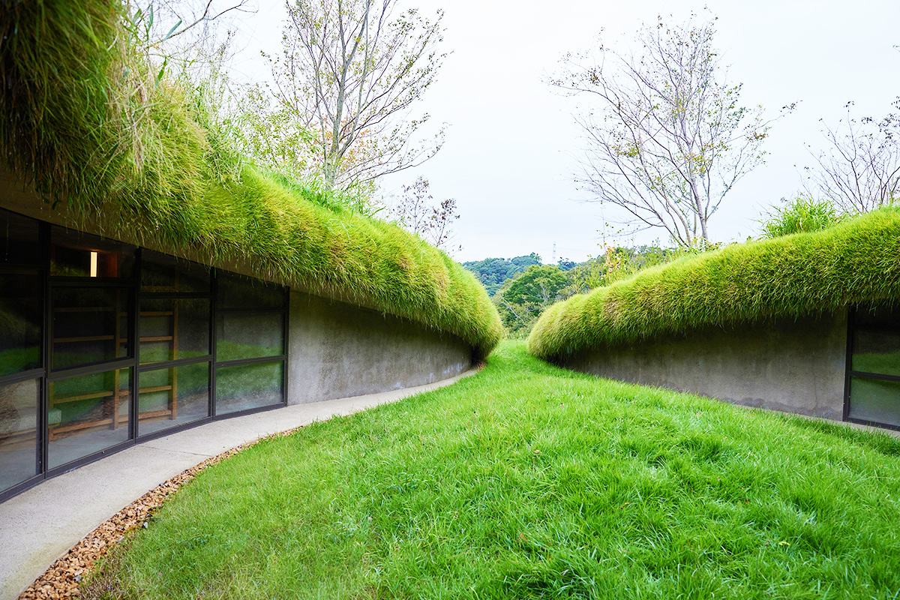
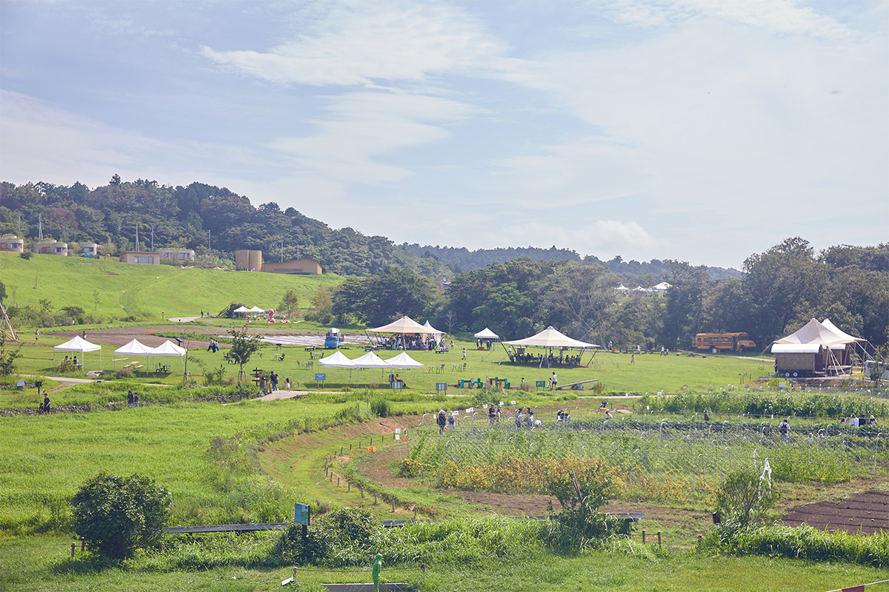
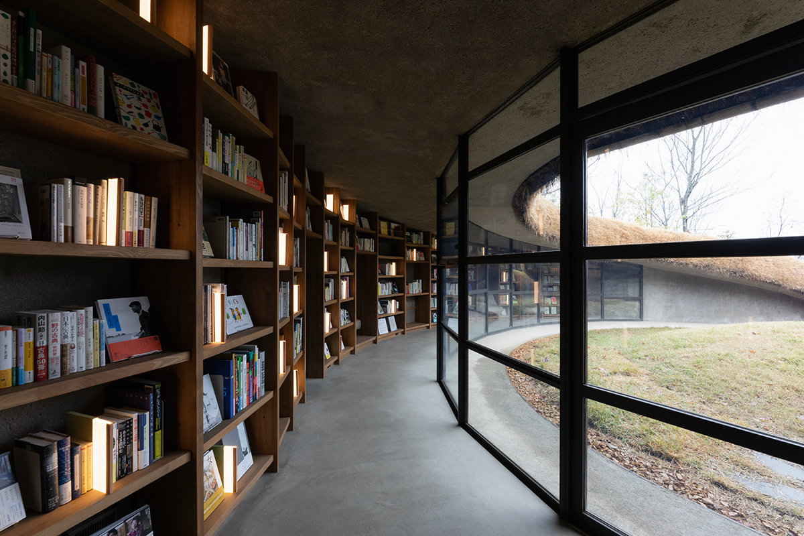
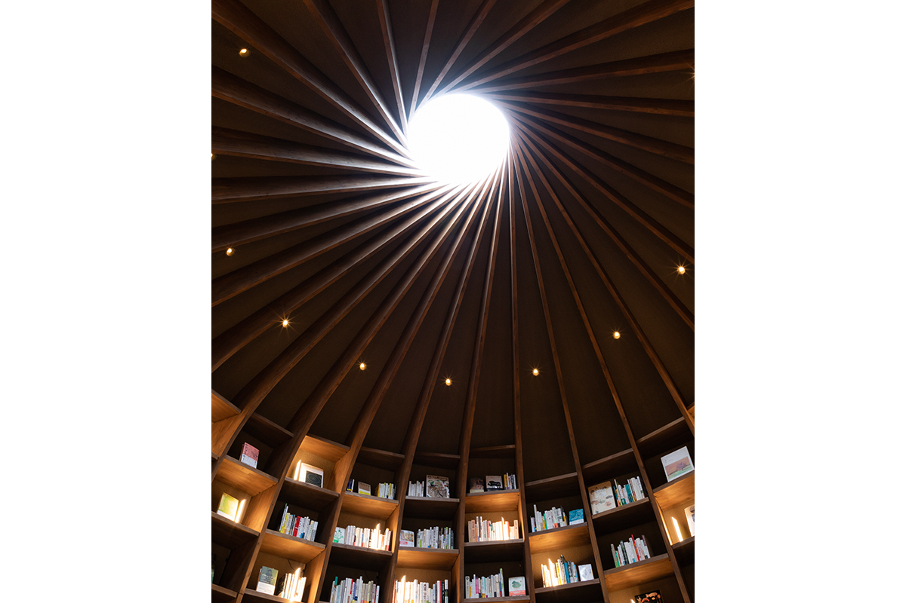
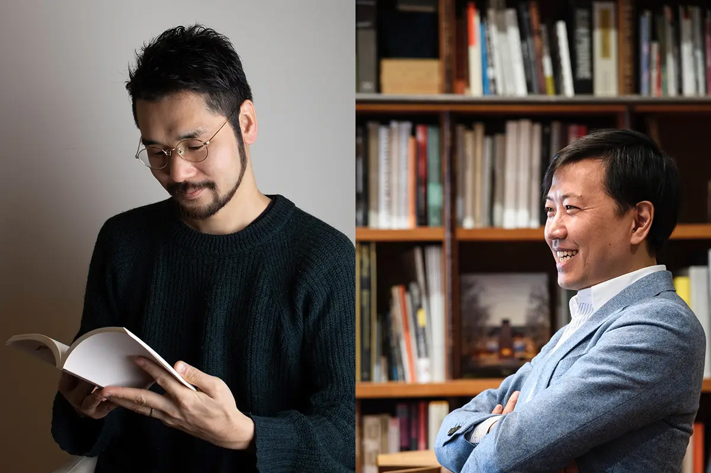
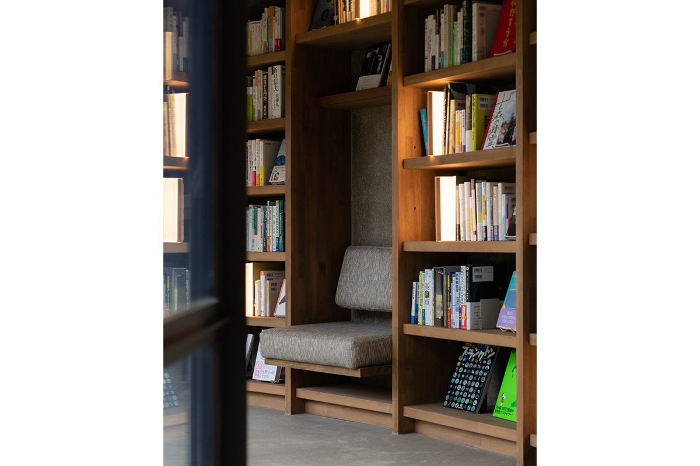
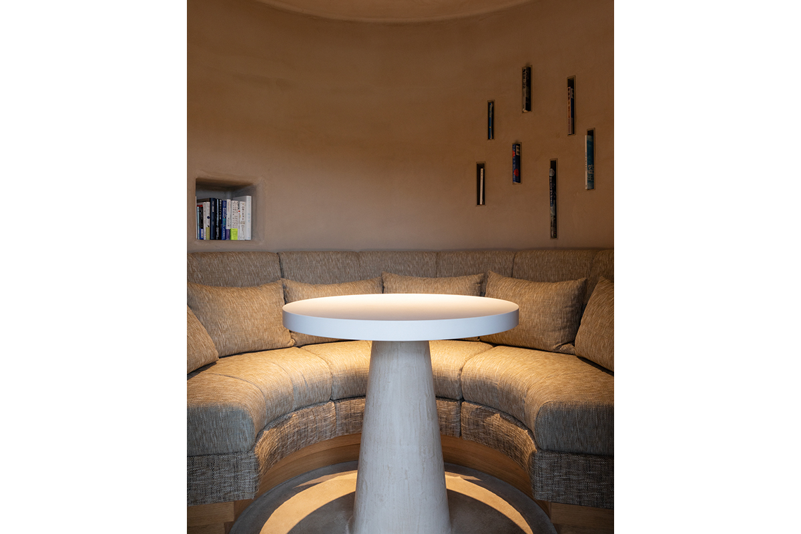
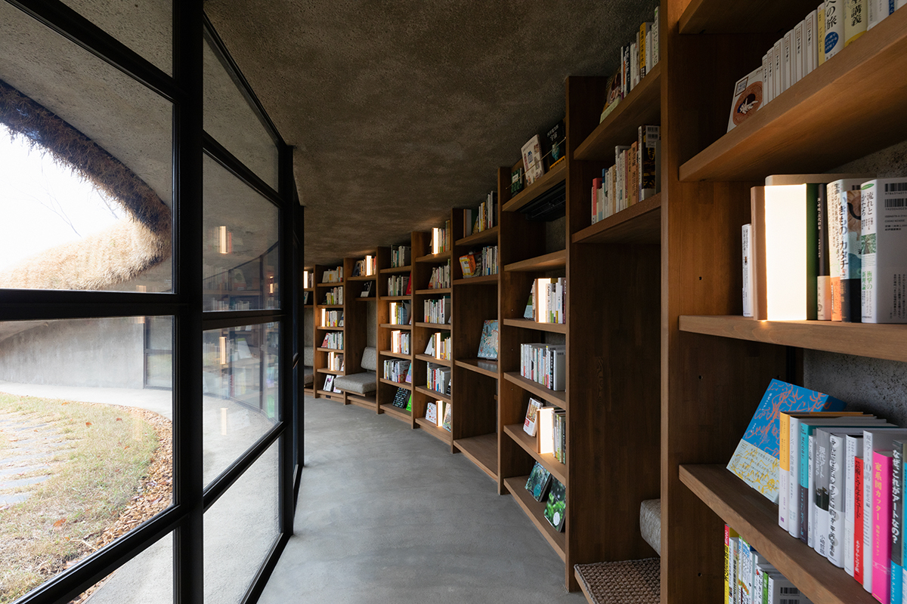
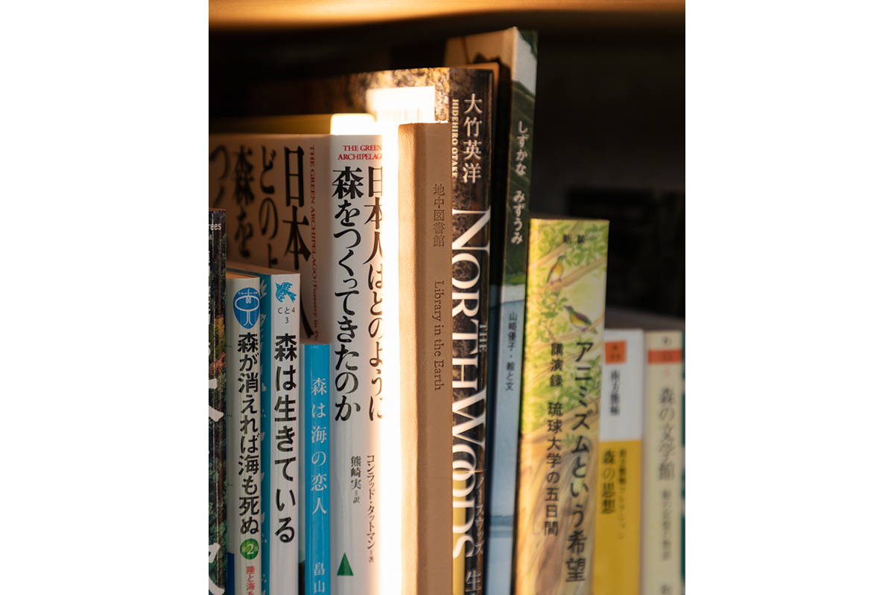

Префектура Тиба · Кисарадзу · архитектура
Подземная библиотека в Кисарадзу: читать книги под травой на ферме KURKKU FIELDS

В феврале 2023 года на ферме KURKKU FIELDS под Кисарадзу открылась «подземная библиотека» по проекту архитектора Хироси Накамуры. Она не стоит на земле, а лежит под ней, как пещера, и чтобы взять книгу с полки, сначала нужно спуститься в холм.
Ферма
Что такое KURKKU FIELDS
Из Токио сюда около полутора часов пути по Аквалайн, мосту-тоннелю через Токийский залив. Кисарадзу стоит у входа на полуостров Босо, и в холмах над городом раскинулась ферма KURKKU FIELDS: 30 гектаров, примерно шесть стадионов «Токио Доум».

На этой земле работают органическая ферма с замкнутым циклом и молочная ферма, где животные живут свободно. Всё, что здесь выращивают, можно попробовать в ресторанах и кафе или купить в лавках: свежие овощи, хлеб, сыр. Есть и где переночевать. Для гостей устраивают экскурсии по полям и события, связанные с природой и искусством. Смысл фермы в том, чтобы почувствовать радость простой жизни, прикоснуться к живому и найти подсказки, как жить без вреда для будущего.
Библиотека
Вход в склон холма
Библиотека стоит на середине склона в низине, похожей на чашу. Снаружи её почти не видно: над залами растёт трава, а вход выглядит как узкая щель в земле. Гости бродят по просторной ферме, вдруг натыкаются на этот вход, спускаются под землю и попадают в пространство, которого не ждали, среди книг, которых не искали.

К открытию в библиотеке было около 3000 книг. Основа подборки посвящена природе и жизни на земле, а от неё нити тянутся к поэзии, философии, истории, религии, науке и экономике. Книги подбирал профессиональный составитель книжных коллекций, глава проекта book pick orchestra, который придумывает, как устроить встречу человека с книгой.
Пройдя между полками, гость выходит в зал, куда сверху, через световой фонарь в потолке, падает дневной свет. Днём библиотека открыта до 17:00, а гости домиков cocoon и TINY HOUSE VILLAGE на территории фермы могут оставаться и после закрытия, когда в подземелье горит мягкий свет. По данным официального сайта фермы на 2026 год, они пользуются библиотекой с 17:00 до 11:00 следующего дня.

Растения растут, питаясь тем, что дают почвенные микроорганизмы. Так и здесь: человек уходит под землю, читает, копит знания и воображение, а потом снова выходит на поверхность и шагает дальше.
Архитектор
Пещера, которую держат книжные полки
Хироси Накамура родился в 1974 году в Токио. Он учился архитектуре в университете Мэйдзи, работал в бюро Кэнго Кумы и в 2002 году основал собственное бюро NAP. Свой метод он называет «микроскопическим проектированием»: здание подстраивается под природные явления, движения людей и их настроение. Среди его наград премия Архитектурного института Японии и ARCASIA Awards for Architecture.

«В ясный день пахать поле, в дождливый читать. Подземная библиотека задумана для такого человека. Ровный сухой участок лежал над долиной, засыпанной строительным грунтом. Мы решили вернуть здесь зелёную долину, а здание должно скромно существовать под растениями и почвенными микроорганизмами, не занимая плодородный слой. Земля всегда была источником жизни и символом материнства. Пустота в глубине маленькой трещины в склоне должна стать спокойным местом отдыха для того, кто возделывает землю»
архитектор Хироси Накамура
Внутри нет ни балок, ни колонн. Перекрытие консолью выходит из подпорных стен по краю и поперечных стенок. Высота потолка следует уклону земли, поэтому появились низкие уголки как раз под рост ребёнка и маленькие потайные комнаты между стенками. Пол, стены и потолок отделаны грунтом и плавно переходят друг в друга, а с торцов перекрытия свисает густая трава и даёт пространству влагу. Полив и удержание воды можно настраивать по сезонам.
В самой глубине устроен зал для чтения вслух детям. Архитектор задумывал его как место, где растят будущее, и сравнивает его с материнским чревом под травяным холмом. Ступенчатые сиденья окружают складки книжных полок, на них стоят книги работников фермы и детские книги. Вертикальные планки полок толщиной 40 мм уходят вверх и держат свод.
«Тонкая планка опирается на соседнюю, ту поддерживает следующая, и только когда круг замыкается, держится всё большое пространство. Из цепочки взаимной поддержки вырастает общее пространство, которое не построить одному сильному человеку. В центре этой конструкции, в световом фонаре, сияет образ Земли, окутанной голубым небом и облаками. Это библиотека, где, окружённый землёй и человеческой мудростью, думаешь о планете»
архитектор Хироси Накамура




«Подземная библиотека» (KURKKU FIELDS)
- Адрес
- префектура Тиба, Кисарадзу, Яна, 2503
- Часы работы
- 12:00–17:00 (гости cocoon и TINY HOUSE VILLAGE и после 17:00)
- Выходные
- вторник, среда (кроме праздничных дней)
- Цены / Вход
- бесплатно, только по предварительной записи и только для участников KURKKU FIELDS MEMBERSHIP (годовой взнос 1000 иен, для жителей префектуры Тиба 500 иен); при входе на ферму сбор на охрану природы 300 иен
- Как добраться
- из Токио около полутора часов по Аквалайн
- Сайт
- kurkkufields.jp